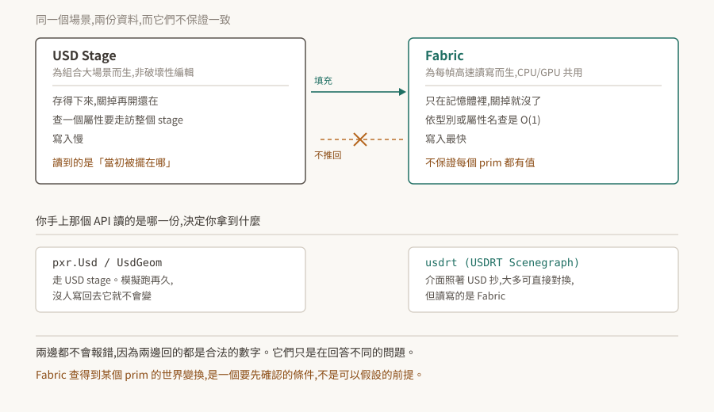

04 · USD stage 與 Fabric:兩份真值,以及你正在讀哪一份
模擬跑了十分鐘,程式讀出來的物件座標一動也沒動。沒有例外、沒有錯誤訊息,那個數字看起來完全合理——它只是回答了另一個問題。
Kit 執行期,同一個場景的資料同時存在於兩個地方,而兩邊都不會因為「你問錯人了」而報錯。

驗證狀態:機制引用官方 USDRT 文件逐字。本 repo 沒有 Kit 環境,未實機驗證;§4 引的實測樣本來自姊妹 repo 在 Isaac Sim 5.1 上的觀察,已標明來源與組態。§6 是待驗清單。
1. 根本問題:USD 為組合而生,不為每幀查詢而生
USD 的設計目標官方寫得很清楚:
"USD is Pixar's library that allows large-scale scenes to be composed from hundreds or thousands of component layers and modified using non-destructive operations."
上千個圖層組合起來、非破壞性編輯——這是為了讓一大群人協作編輯同一個場景。代價落在查詢上:找「所有某型別的 prim」或「某個名字的屬性」得走訪整個 stage,官方給的複雜度是 O(n) - traversal of entire stage,寫入速度標的是 Slow。
編輯場景時這個代價無所謂,一秒鐘做不到一次。但算圖每秒要做六十次,物理每秒可能上百次。同一套資料結構同時滿足「好編輯」與「每幀查一遍」是做不到的,兩邊要的東西相反。
2. Fabric 的答案
於是有第二份:
"Fabric is the Omniverse library that enables high-performance creation, modification, and access of scene data, as well as communication of scene data between CPU and GPU and other Fabric clients on a network."
同一份官方比較表裡,Fabric 的查找成本是 O(1) - query、寫入速度是 Fastest,而儲存性質是 Transient, in-memory only。
存取它的 API 刻意做成 USD 的樣子:
"USDRT Scenegraph API is an Omniverse API that mirrors the USD API (and is pin-compatible in most cases), but reads and writes data to and from Fabric instead of USD."
介面照著 USD 抄、多數情況可以直接對換,但讀寫的對象換了一個。這個設計讓移植容易,同時讓「我到底在讀哪一份」變得不容易從程式碼看出來——兩邊的呼叫長得幾乎一樣。
3. 資料只往一個方向流
Fabric 的內容從哪來:
"Data in Fabric can be populated from the local composed USD stage, but may also be generated procedurally or populated over the network."
可以從 USD stage 填充,但也可以是程式生的、或從網路來的。所以 Fabric 裡有的東西不一定在 USD stage 上有對應。
反方向則沒有:
"Fabric is a transient data store on top of USD, so values set in Fabric are not automatically pushed back to the USD stage."
寫進 Fabric 的值不會自動回到 USD stage。 這是設計本身,不是遺漏——Fabric 存在的理由之一就是讓各個系統交換資料時不必回寫 USD。
由此得到兩條實務推論:
- 在 Fabric 上改了東西然後存檔,存出來的檔案裡不會有那些改動,除非明確寫回 USD。
- 讀 USD stage 拿到的是「當初被寫進去的值」。模擬跑再久、Fabric 那邊變化再大,沒有人寫回去,它就不會變。
啟用 Fabric Scene Delegate 的情況下,USD 那一側的改動會即時反映過去:"Fabric is populated from the USD Stage while Fabric Scene Delegate is enabled",而且 "any transform change on any prim in USD is immediately reflected as an update in Fabric"。方向依然是 USD → Fabric。
4. Fabric 裡有沒有值,是條件不是前提
這一節是本篇最容易踩的地方。
「Fabric 是執行期的即時資料」聽起來像是「任何 prim 隨時都能從 Fabric 讀到最新位置」。實際上一個 prim 在 Fabric 上有沒有世界變換,取決於好幾個條件。
官方描述在 Fabric Scene Delegate 下從 USD 填充時的行為是:"every Boundable prim has two new attributes created in Fabric"。其中 omni:fabric:worldMatrix 是 "the local-to-world transform of the prim, as a GfMatrix4d",性質標的是 computed, cached, read-only,而且 "updated when updateWorldXforms() is called"。
拆出來的條件:Fabric Scene Delegate 要啟用、prim 要是 Boundable、世界變換要在 updateWorldXforms() 被呼叫之後才是新的。任何一條不成立,那個值就可能不存在或是舊的。
查詢用的 RtXformable::HasWorldXform(),官方定義是:
"Check if the Fabric prim has any world transform attributes"
它問的是「這個 prim 在 Fabric 上有沒有被寫入 world transform 屬性」,不是「有沒有同步過」的旗標。 值的來源可以是明確建立、SetWorldXformFromUsd(),或模擬端寫入。
姊妹 repo 在 Isaac Sim 5.1 的一個場景組態上實測到的結果:
probe_pose target=/World/RT-A/main/fork_liftA1 → HasWorldXform=False
probe_pose target=/World/RT-A/main/fork_tilt → HasWorldXform=False
那個場景的 Fabric 沒有替那些 prim 填世界變換。這是該組態下的觀察,不是通則——換一個應用、換一組 extension、FSD 開或關,結果可以不同。可以當通則用的是它的形狀:
Fabric 查得到某個 prim 的世界變換,是一個要先確認的條件,不是可以假設的前提。
Kit 106.0 起 Fabric Scene Delegate 在 Composer 與 Explorer 預設啟用,但那是那兩個應用的組態,不是 Kit 的普遍保證。自己的 .kit 應用開不開,由自己的設定決定(03)。
5. 你正在讀哪一份
判斷方法很直接:看你用的是哪一組 API。
| 你呼叫的 | 讀的是 | 拿到什麼 |
|---|---|---|
pxr.Usd / pxr.UsdGeom 那一套 |
USD stage | authored 值。沒人寫回去就不會變 |
usdrt 的對應類別 |
Fabric | 執行期值,前提是那個 prim 在 Fabric 上真的有 |
兩邊都不會因為問錯而報錯,因為兩邊回的都是合法的數字。
排查時的動作順序:先確認自己讀的是哪一份,再懷疑值不對。同一個 prim 用兩條路徑各讀一次、把兩個值印出來,比讀程式碼快。兩個值不同不代表有 bug——那正是設計。
這與 02 §7 的「啟用回傳成功不是它活著」、03 §7 的「dump 得到不等於被採用」是同一個家族的問題:回傳值合法,不代表它回答了你問的問題。Kit 這一層的多數難查問題都長這個樣子。
6. 待驗清單
| # | 待驗的斷言 | 怎麼驗 | 什麼算通過 |
|---|---|---|---|
| 1 | 寫進 Fabric 不會回到 USD(§3) | 用 usdrt 改一個 prim 的變換,再用 pxr.Usd 讀同一個屬性,並存檔檢查 |
USD 側的值不變,存出的檔案也沒有那個改動 |
| 2 | USD 側改動即時反映到 Fabric(§3) | FSD 啟用下改 USD 的 transform,立刻用 usdrt 讀 |
讀到新值 |
| 3 | HasWorldXform 在預設純 Kit 應用上是否為 True(§4) |
起一個最小 .kit 應用,對場景裡的 Boundable prim 逐一查 |
記錄 True/False 的比例與 FSD 開關的對應 |
| 4 | FSD 關閉時 Fabric 是否仍被填充(§4) | 同上,切換 FSD 設定各跑一次 | 兩次結果不同則確認 FSD 是條件之一 |
| 5 | updateWorldXforms() 之後值才更新(§4) |
改 USD transform,不呼叫該函式先讀一次,呼叫後再讀 | 兩次值不同 |
第 3 條做完可以把 §4 的實測樣本從「Isaac Sim 上的一個組態」升級成「純 Kit 環境下的通則或反例」,那是這一篇目前最大的缺口。
⚠ 這五條全部是列舉或狀態查詢,每一條都要配正對照(02 §7):拿一個確定有值的 prim 當試紙。它若也回「沒有」,壞的是查法,不是資料。